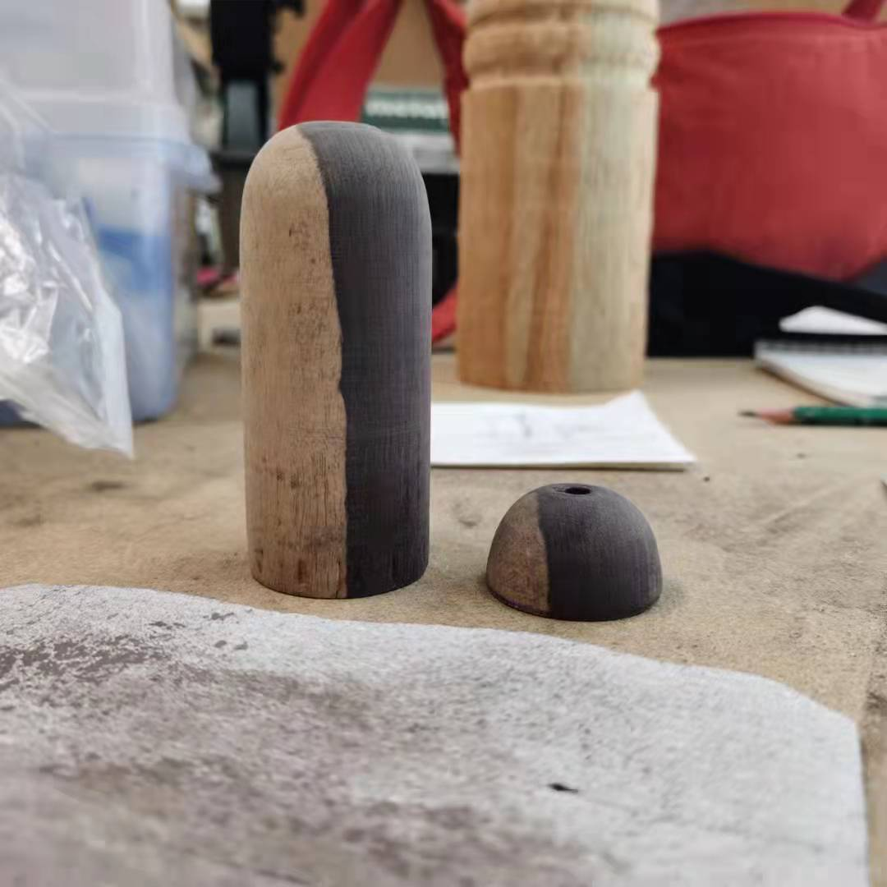

竹系列 ：花器 / 香器
设计采用阴阳木料，花器表面会呈现出独特的纹理。同时在瓶口配有黄铜配件，减轻植物对木制部分的腐蚀。
The design uses Yin and Yang wood, the surface of the flower will present a unique texture. At the same time, the bottle is equipped with brass fittings to reduce the corrosion of plants on the wooden part.
材料:紫光檀白皮料，黄铜